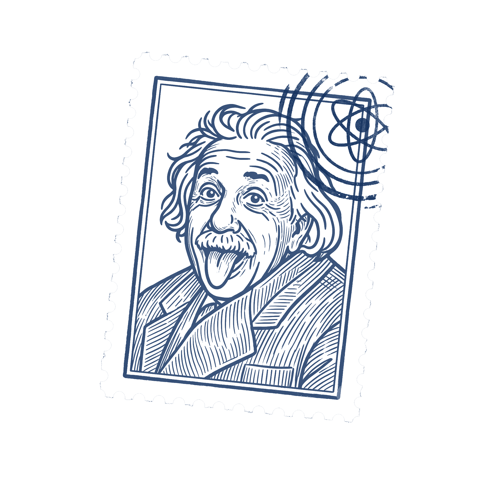
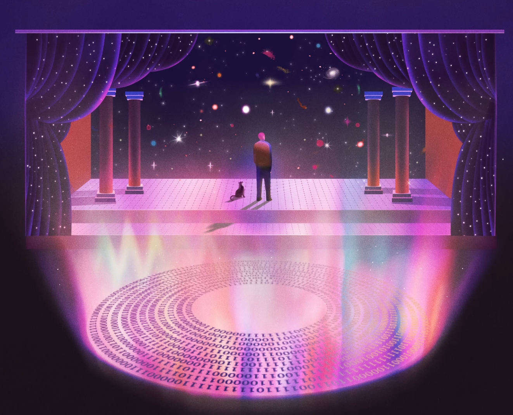
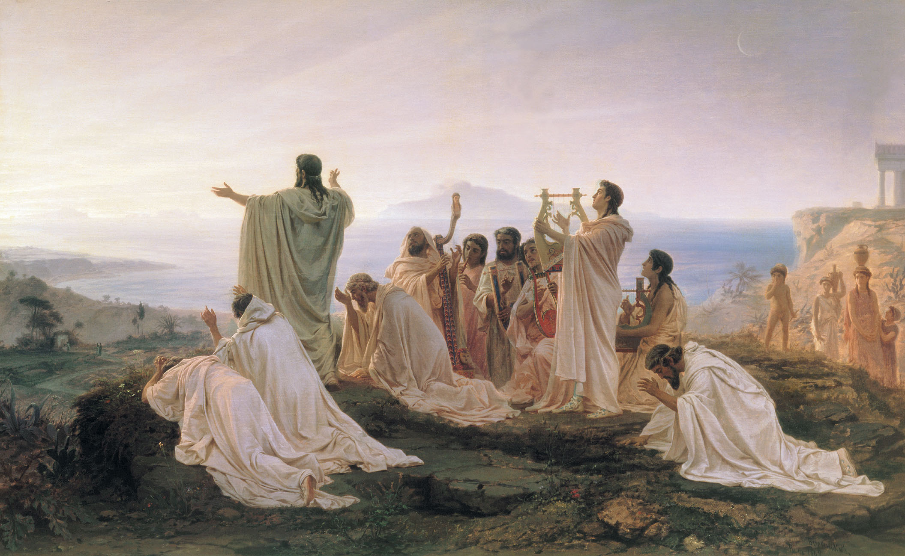

The Journal of a Physicist
Building Stuff with Cool People;
Construindo Coisas com Pessoas Legais.

The Journal of a Physicist
The Journal of a Physicist é um projeto voltado a construção de um propósito que junta Arte, Ciência e Tecnlogia como visão de integração para desenvolver e criar novas perspectivas da realidade. É um lugar onde eu (João van John) dedico para registrar os meus aprendizados, projetos e reflexões sobre o que significa ver o mundo com profunidade e, a partir dele, poder criar novas soluções.
Ciência
Física, matemática, computação e outras ciências, como ferramentas para compreender a natureza da realidade.

Arte
Arte, Filosofia e Literatura, como linguagens para entender a complexibilidade da realidade.

Tecnologia
Engenharia, inovação e ciência aplicada como ferramentas para construir e reinventar a estrutura da realidade.

Postagens Recentes
The Art
"Temos a arte para não morrermos da verdade." — Nietzsche


Catálogo de Lectures
12 lectures
-
Relatividade Geral
Anotações das aulas de Relatividade Geral do curso de Física da UEL.
Class Lecture -
Mecânica Quântica II
Anotações das aulas de Mecânica Quântica II do curso de Física da UEL.
Class Lecture -
Introdução ao Aprendizado de Máquina
Introdução nos fundamentos teóricos e práticos do aprendizado de máquina. Exploração de algoritmos clássicos, redes neurais e a matemática por trás da capacidade de generalização dos modelos.
Lecture -
Introdução à Mecânica Estatística
Anotações das aulas de Mecânica Estatística do curso de Física da UEL.
Class Lecture -
Introdução à Lógica
Anotações e material de apoio para uma Introdução à Lógica, cobrindo os fundamentos essenciais do pensamento lógico e formal.
Lecture -
Introdução a Algoritmos e Lógica de Programação
Introdução aos fundamentos do pensamento computacional. Da definição de algoritmo e pseudocódigo até estruturas condicionais, de repetição e estruturas de dados básicas.
Lecture -
Mecânica de Autoveículos
Engenharia Mecânica - Ciclo específico: Mecânica e de Automóveis. Objetivo: Proporcionar os fundamentos da dinâmica veicular aplicados à tração e à frenagem de autoveículos, o estudo dos sistemas responsáveis por essas funções e suas funções de transferência, culminando na elaboração de um programa de simulação computacional para análise de desempenho de um veículo exemplo.
Technology Lecture -
Introdução à Física do Estado Sólido
Anotações das aulas de Introdução à Física do Estado Sólido do curso de Física da UEL.
Class Lecture -
Introdução a Python
Introdução prática à linguagem Python, focada em análise de dados, computação científica e automação. Do básico da sintaxe até as principais bibliotecas da área matemática.
Lecture -
Introdução à Mecânica Automobilística
Engenharia Mecânica - Ciclo específico: Mecânica e de Automóveis. Objetivo: Proporcionar uma visão sistêmica da indústria automotiva, abordando os principais sistemas e componentes de um automóvel, bem como os fundamentos da mecânica automotiva, incluindo motores de combustão interna, transmissão, suspensão, freios e direção. O curso também visa discutir as tendências atuais e futuras da indústria automotiva, como veículos elétricos, híbridos e autônomos.
Technology Lecture -
Introdução à Computação Quântica
Os pilares da computação quântica, abrangendo os conceitos de qubits, portas lógicas quânticas, superposição, emaranhamento e introdução aos primeiros algoritmos quânticos.
Lecture -
Introdução à Sistemas Automotivos
Engenharia Mecânica - Ciclo específico: Mecânica e de Automóveis. Objetivo: Proporcionar uma visão sistêmica de um sistema automotivo, incluindo motor, unidades eletrônicas de gerenciamento, rede de comunicação, sistemas de assistência ao motorista, condução autônoma, veículos elétricos e híbridos.
Technology Lecture
Nenhuma lecture encontrada.